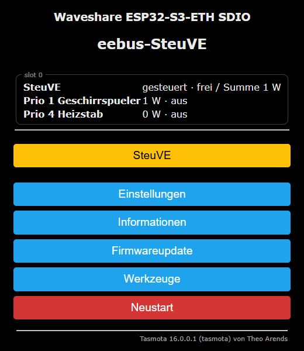
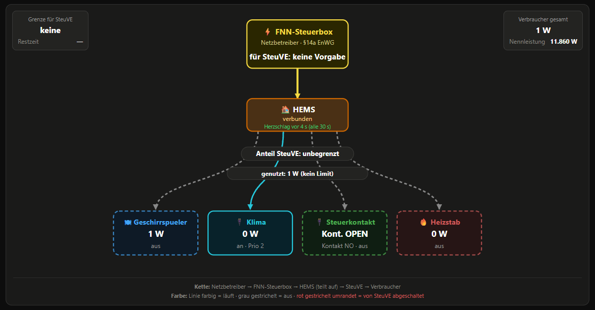
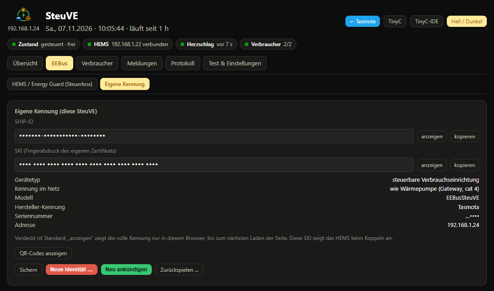
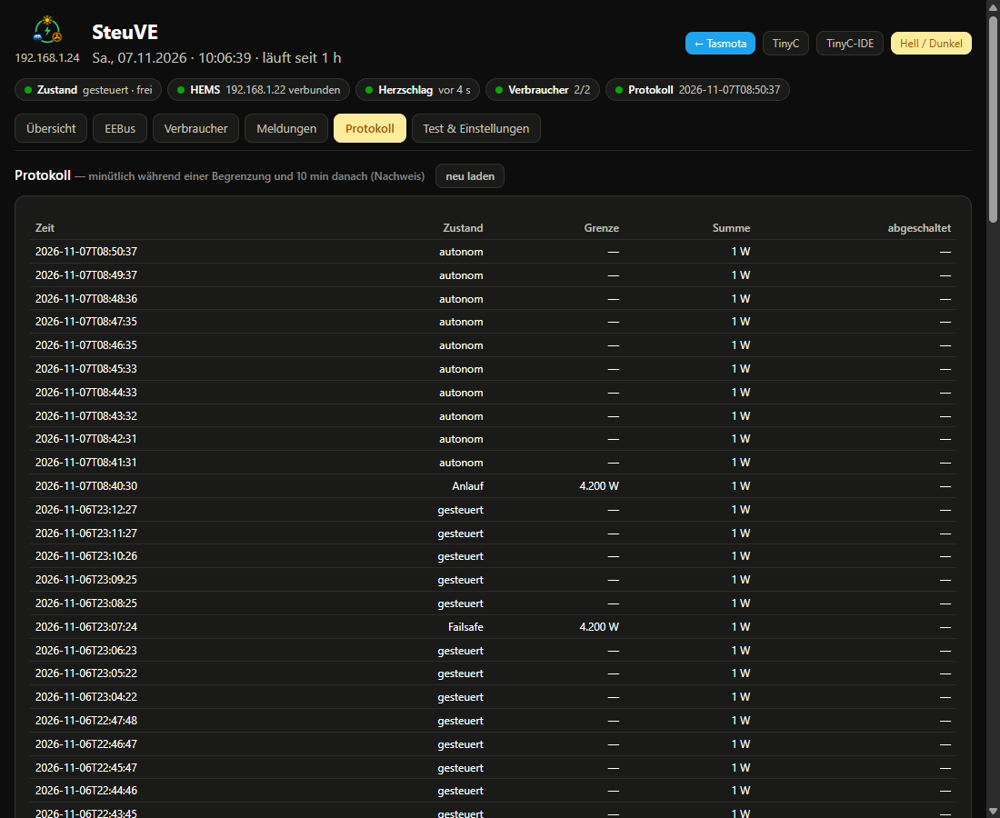

xdrv_128 v033 + TinyC-Skript steuve v021 (@version 20261121_1900) · Persönliche Daten in den Bildern unkenntlich gemacht (Adressen auf 192.168.1.x umgeschrieben, Kennungen verdeckt)/steuve_kontakt.csv als Nachweis jedes Schaltvorgangs (Abschnitt 8).„SteuVE“ steht für steuerbare Verbrauchseinrichtung. Sie stellt sich per EEBUS wie eine Wärmepumpe oder Wallbox vor und nimmt eine § 14a-Bezugsgrenze (LPC) entgegen. Dahinter hängen bis zu vier Shelly- oder Tasmota-Geräte:
Die Teile:
xdrv_128 – spricht EEBUS mit dem Energy Guard (HEMS oder Steuerbox), empfängt Grenze und Failsafe-Werte, meldet Leistung und Nennleistung und sagt Grenzen zu oder lehnt sie ab.steuve – fragt die Verbraucher ab, meldet die Summe an den Treiber, schaltet nach Priorität und stellt die Steuerkontakte.steuve.html auf der SD-Karte; das Gerät liefert zuerst die gepackte steuve.html.gz aus (Abschnitt 10).Kette: Netzbetreiber → Steuerbox → HEMS (teilt auf) → SteuVE → Verbraucher. Ohne HEMS kann die Steuerbox die SteuVE auch direkt steuern (Direktsteuerung). Nach BK6-22-300 Anlage 1 Ziff. 4.4 gilt für jede SteuVE entweder das eine oder das andere: Sie vertraut entweder dem HEMS oder der Steuerbox, nie beiden.
| Was | Wo / Wert | Warum |
|---|---|---|
| Vorlage | Waveshare ESP32-S3-ETH SDIO(Einstellungen → Vorlage) | Die SD-Karte hängt per SDIO 1-Bit am ESP32-S3: GPIO5 = D0, GPIO6 = CMD, GPIO7 = CLK. Beim Start steht im Log UFS: SDCard mounted (SDIO 1-bit). Auf der SD-Karte liegen Bedienseite, Protokolle und Verbraucherliste. |
| HTTP API aktivieren | Haken setzen (Einstellungen → Weitere Einstellungen; entspricht SetOption128 1) | Ohne den Haken weist Tasmota Abrufe ohne Herkunftsangabe ab (im Log HTP: Referer '' denied): Die SteuVE-Seite bleibt beim direkten Aufruf leer, und Befehle von außen (/cm?cmnd=…) werden abgewiesen. |
| Firmware | gebaut mitCONFIG_FREERTOS_IDLE_TASK_STACKSIZE=3072 | Mit dem Vorgabewert 1024 Byte kann der ESP32-S3 mit LAN-Chip W5500 unter Last abstürzen (DebugException beim Taskwechsel). Gemessen auf einer Steuerbox: unter Last blieben von 1024 nur 80 Byte frei, mit 3072 sind es über 2200. Beim Bauen in der Bauvariante (custom_sdkconfig) eintragen. |
Auf der Tasmota-Hauptseite auf „SteuVE“ klicken. Darüber zeigt das Skript einen Kurzstand: Zustand, Summe und die Leistung je Verbraucher, bei einem Steuerkontakt seine Stellung.

Oben rechts auf der SteuVE-Seite:
Die Statuszeile darunter zeigt immer: Zustand, HEMS bzw. Energy Guard (verbunden/getrennt), Herzschlag (wann zuletzt) und Verbraucher (erreichbar/belegt), sobald es Protokollzeilen gibt zusätzlich Protokoll mit der Zeit der letzten Zeile.
Eine SteuVE wird auf einem von zwei Wegen gesteuert (BK6-22-300 Anlage 1 Ziff. 4.4): über ein HEMS (Ziff. 4.4 b – die Steuerbox gibt dem HEMS einen Gesamtwert, das HEMS teilt ihn auf) oder direkt von der Steuerbox (Ziff. 4.4 a). Die Übersicht zeigt, welcher Weg gerade gilt.

| Spalte | Bedeutung |
|---|---|
| Messgerät (M) Schalter (S) Steuerkontakt (K) | Was das Gerät kann bzw. wofür es eingetragen ist: M = Messgerät ohne Relais (z. B. PM Mini, EM, 3EM, Tasmota ohne Relais) – kann nie abschalten S = Gerät mit Relais – kann abschalten K = Steuerkontakt (Shelly 1, Abschnitt 5) – darunter steht NC oder NO ? = noch nicht erkannt · ein Fake-Platz zählt als S Ob ein Schalter wirklich abgeschaltet werden darf, legt der Haken „abschaltbar“ im Reiter Verbraucher fest. |
| jetzt | aktuelle Leistung; „?“ = Gerät antwortet nicht beim Steuerkontakt die zurückgelesene Stellung: grün OPEN/CLOSE = Normalstellung, gelb = Begrenzungsstellung |
| Zustand | an / aus, oder rot „von SteuVE aus“ beim Steuerkontakt „normal“ oder „begrenzt · von SteuVE“ |
| erreichbar | ja · „Aussetzer n“ (einzelne Antworten fehlten) · nein (3 Runden in Folge keine Antwort) |
Wird die Seite schmal (Handy), lässt sich die Liste seitlich schieben; die Zeilen brechen nicht um.
Der Reiter hat zwei Unterreiter. Vorne steht „HEMS / Energy Guard (Steuerbox)“ – das braucht man im Alltag. „Eigene Kennung“ braucht man nur beim Koppeln und beim Sichern.

Nur ein Energy Guard kann vertraut sein. Nur er darf Grenzen und Failsafe-Werte schreiben; fremde Schreibversuche werden abgewiesen (Zähler „Abgewiesen“). Vertrauen entziehen trennt sofort; die SteuVE läuft dann autonom ohne Begrenzung und ruft die alte Gegenstelle auch nicht von selbst wieder an (wieder angerufen wird nur ein vertrauter Energy Guard). Ein neues Vertrauen wirkt ebenfalls sofort: Die SteuVE sucht den Energy Guard und verbindet sich mit ihm, ein Neustart ist nicht nötig.
Steuerweg zeigt „über HEMS“ oder „Direktsteuerung (Energy Guard = Steuerbox)“. Steht dort „unbekannt — Gerät nicht in der Fundliste“, ist der vertraute Energy Guard nur noch nicht in der Liste (z. B. nach dem Einschalten): neu suchen klicken. Die Steuerung selbst läuft trotzdem.

EEBusCsTyp.eebus_cert.der, eebus_key.der). Die Schlüsseldatei ist geheim – sicher ablegen.Sichern und Zurückspielen laufen über die Tasmota-Seite (Port 80) und sind durch das Web-Passwort geschützt, falls eines gesetzt ist.

| Spalte | Bedeutung |
|---|---|
| Prio 1 … 4 | Abschaltreihenfolge: Prio 4 wird zuerst abgeschaltet, Prio 1 zuletzt |
| Fake | Platz wird simuliert (Testprofil), es geht nichts ins Netz. Die Seite trägt dann selbst eine Schein-Adresse 10.0.0.x ein. |
| IP | Adresse des Shelly- oder Tasmota-Geräts. Leer oder erstes Oktett 0 = Platz frei (wird nicht abgefragt, nicht geschaltet, zählt nicht) |
| Verbraucher | Name, erscheint in Übersicht, Kurzstand und Protokoll |
| max. Nennleistung | höchste Leistung des tatsächlichen Verbrauchers (Typenschild). Leer = 3.680 W (16 A). Die Summe meldet die SteuVE dem HEMS als Nennleistung. |
| abschaltbar | an = darf bei einer Begrenzung abgeschaltet bzw. umgelegt werden aus = wird nur gemessen und mitgemeldet gesperrt mit „Messgerät“ darunter = das Gerät hat kein Relais und kann nicht abschalten |
| Steuerkontakt | – kein = normaler Verbraucher NC / NO = Steuerkontakt (siehe unten) Nur beim Shelly 1 wählbar, sonst steht dort „nur Shelly 1“. Wer NC oder NO wählt, bekommt den Haken „abschaltbar“ automatisch gesetzt. |
| Gerät / Testprofil | erkanntes Gerät: Shelly-Modell und Generation oder „Tasmota 1 Relais“, „Tasmota Messung“ usw. prüfen fragt das Gerät in der nächsten Runde neu ab. |
Nach dem Ändern Speichern klicken – es erscheint „✓ gespeichert“. Etwa eine Sekunde später meldet die SteuVE die neue Nennleistung an das HEMS.
| Art | Beispiele | M/S/K | Funktion |
|---|---|---|---|
| Gen2+ mit Schalter | Plus 1PM, Plus Plug S, Pro 1PM, Gen3/Gen4-Schalter | S | messen und schalten |
| Gen1 Relais mit Messung | Shelly 1PM, Plug S (Gen1) | S | messen und schalten |
| Shelly-1-Familie (potentialfrei, ohne Messung) | Shelly 1 (Gen1), Plus 1, Plus 1 Mini, 1 Gen3, 1 Gen4, 1 Mini Gen3, 1 Mini Gen4 | K | Steuerkontakt umlegen und zurücklesen |
| Gen2+ PM1 | PM Mini Gen3 | M | nur messen |
| Gen2+ EM1 | Pro EM, EM Gen3 | M | nur messen |
| Gen2+ EM (3 Phasen) | Pro 3EM | M | nur messen (Summe aller Phasen) |
| Gen1 EM / 3EM | Shelly EM, Shelly 3EM | M | nur messen (Summe aller Kanäle) |
Reine Messgeräte werden nie geschaltet; beim Erkennen nimmt das Skript den Haken „abschaltbar“ selbst heraus, und die Seite sperrt ihn. Meldet ein als Schalter geführtes Gerät keinen Schaltausgang, fragt das Skript es neu ab. Am Gerät erprobt ist von der Shelly-1-Familie der 1 Mini Gen3; die Kennungen der anderen stammen aus der Shelly-Dokumentation.
Manche Geräte haben einen eigenen Steuereingang für die § 14a-Steuerung (Wärmepumpe: EVU-/SG-Ready-Eingang, Wallbox: Freigabe- oder Begrenzungseingang). Dort wird ein Shelly 1 mit seinem potentialfreien Kontakt angeschlossen. Die SteuVE legt den Kontakt bei einer Begrenzung um; wie weit das Gerät dann herunterregelt, legt das Gerät selbst fest.
| Einstellung | Normalstellung (frei) | bei Begrenzung |
|---|---|---|
| NC – normally closed (Eingang des Geräts ist normal geschlossen) | Relais ein = CLOSE | Relais aus = OPEN |
| NO – normally open (Eingang des Geräts ist normal offen) | Relais aus = OPEN | Relais ein = CLOSE |
restore_last).detached) – sonst legt ein Taster oder Schalter am SW-Eingang den Steuerkontakt mit um.Antwortet ein Gerät nicht wie ein Shelly, fragt das Skript es als Tasmota-Gerät ab (Befehl Status, danach Status 10 für die Energiemessung). So lassen sich z. B. umgeflashte Steckdosen und Steckdosenleisten mit Messung verwenden.
| Anzeige | Gerät | M/S | Funktion |
|---|---|---|---|
| Tasmota 1 Relais (bzw. 2, 3 … Relais) | Steckdose oder Leiste mit Energiemessung | S | messen und schalten |
| Tasmota Messung | Messgerät ohne Relais | M | nur messen |
| Tasmota ohne Messung | Gerät ohne Energiemessung | M | nicht nutzbar (liefert keine Leistung) |
| Tasmota: Passwort? | Gerät mit Web-Passwort | ? | nicht nutzbar, siehe Voraussetzungen |
/cm?cmnd=…), und es darf kein Web-Passwort gesetzt sein.Power0), weil eine Leiste meist nur einen Messkreis für alle Steckplätze hat.ENERGY → Power aus Status 10, alle 10 s wie bei den Shellys.Eine Grenze anzunehmen (ACK) heißt nach dem Use Case LPC, sie einhalten zu können – nicht nur, sie empfangen zu haben ([LPC-002], [LPC-003]). Deshalb meldet das Skript dem Treiber in jeder Runde, auf welche Leistung die SteuVE gerade herunterkommt (Zusage):
| Fall | Antwort an den Energy Guard |
|---|---|
| Grenze ≥ Zusage | ACK – Grenze angenommen |
| Grenze < Zusage, Zusage unbekannt oder älter als 60 s | NACK (Fehlernummer 7) – Grenze abgelehnt, der bisherige Zustand bleibt |
| angenommene Grenze 2 Runden lang nicht eingehalten (Summe darüber oder Steuerkontakt nicht bestätigt) | Abbruch – die SteuVE hebt die Grenze auf und meldet dem Energy Guard „Grenze nicht aktiv“ ([LPC-923]); im Kontakt-Protokoll „nicht eingehalten“ |
Ein HEMS kann darauf reagieren und den Anteil neu verteilen. Die Freigabe (Grenze aufheben) wird immer angenommen.


Das Protokoll ist der Nachweis einer Begrenzung. Es wird nur während einer Begrenzung und 10 Minuten danach minütlich geschrieben (Datei /steuve_log.csv, bei SD-Karte dort). Ohne Begrenzung kommt nichts dazu – die letzten Zeilen können deshalb Tage alt sein.
/steuve_kontakt.csvFür die Steuerkontakte schreibt das Skript zusätzlich jedes Ereignis in eine eigene Datei (nur anhängen, bei SD-Karte dort). Sie dient als Nachweis, wann welcher Kontakt wie stand (BK6-22-300 Anlage 1 Ziff. 7.2–7.4). Abrufbar z. B. über die TinyC-IDE (Port 82) oder die Dateiverwaltung von Tasmota.
| Spalte | Inhalt |
|---|---|
| Zeit | Ortszeit, z. B. 2026-11-21T18:33:05 |
| Ereignis | Begrenzung Beginn · Begrenzung Ende · umgelegt (Begrenzung) · zurück (normal) · bestätigt · NICHT bestätigt · nicht eingehalten -> EEBusCsFail · Normalstellung wiederhergestellt |
| Prio, Name | Platz und Name (bei Beginn/Ende „-“) |
| Kontakt, Relais | NC/NO und die Stellung OPEN/CLOSE |
| Grenze W, Zustand | Grenze zu diesem Zeitpunkt, Zustand der SteuVE |
Beispiel (Begrenzung mit einem Kontakt NC, danach Ende):
…T13:27:06;Begrenzung Beginn;-;-;-;-;14252;gesteuert
…T13:27:06;umgelegt (Begrenzung);3;Test Steuern;NC;OPEN;14252;gesteuert
…T13:27:06;bestaetigt;3;Test Steuern;NC;OPEN;14252;gesteuert
…T13:27:38;Begrenzung Ende;-;-;-;-;0;gesteuert
…T13:27:38;zurueck (normal);3;Test Steuern;NC;CLOSE;0;gesteuert
…T13:27:38;bestaetigt;3;Test Steuern;NC;CLOSE;0;gesteuert

EEBusCsFs), Zählerstand und von wem die letzte Grenze kam..pvs-Datei, deren Name dem Skriptdateinamen folgt. Lädt man eine neue Fassung desselben Skripts (gleicher @name) unter neuem Dateinamen, übernimmt TinyC die alte Liste selbst (im Log: „persist values taken over“) – auch beim Laden über die TinyC-IDE.STVCFG und STVKONT. Mit STVSET und STVKONT lässt sie sich schnell wieder eintragen.slot<N>-<name> und haben keinen Update-Knopf. Der Update-Knopf erscheint nur bei Skripten aus dem Verzeichnis, wenn dort eine neuere @version liegt..pvs – die Verbraucherliste ist danach leer. Vorher mit STVCFG notieren und nach dem Laden im Reiter Verbraucher neu eintragen. Von v012 bis v020 auf v021 bleibt die Liste erhalten.steuve.html und gepackt als steuve.html.gz auf der SD-Karte. Das Gerät liefert zuerst die .gz aus (etwa 30 statt 90 KB, die Seite ist schneller da und der Webserver weniger belastet)..gz liegen, zeigt der Browser weiter die alte Seite..gz entsteht z. B. mit gzip -9 -k -n steuve.html.Tasmota-Hauptseite → Werkzeuge → Konsole.
xdrv_128)| Befehl | Bedeutung |
|---|---|
EEBusCs | Zustand als JSON: Zustand, Begrenzt, Grenze, Restzeit, Energy Guard, Failsafe, Nennleistung, Leistung, Bekannt, Herzschlag, ZusageW, ZusageAlterS, Quelle (neu) |
EEBusCsTrustEEBusCsTrust <ski>EEBusCsTrust hmEEBusCsTrust 0 | aktuellen Stand anzeigen diesem Energy Guard vertrauen (SKI oder eindeutiger Anfang) dem Energiemanager aus der Fundliste vertrauen Vertrauen entziehen (trennt sofort) |
EEBusCsTyp wpEEBusCsTyp wallboxEEBusCsTyp steuerbox | stellt sich als Wärmepumpen-Gateway vor (Vorgabe; im Netz „Gateway“, Kategorie 4) stellt sich als Ladestation vor (im Netz „ChargingStation“, Kategorie 3) alte Kennung (bis Treiber v006) Umstellen kündigt neu an und trennt eine eingehende Verbindung. |
EEBusCsFs <W> [s] | eigene Failsafe-Vorgabe, gilt bis der Energy Guard eigene Werte schreibt |
EEBusCsSim <W> [s]EEBusCsSim 0 | Grenze lokal simulieren (nur zum Testen) Simulation aufheben |
EEBusCsMsg | Meldungen vom/an den Energy Guard (letzte 60, ohne Herzschläge) |
EEBusCsPower <W> [Wh]EEBusCsPower unbekanntEEBusCsMax <W> | Leistung melden Verbrauch nicht bekannt melden Nennleistung melden macht das Skript selbst, nicht von Hand nötig |
EEBusCsReady <W>EEBusCsReady unbekannt | Zusage: so weit kommt die SteuVE gerade herunter (darunter: NACK); unbekannt = jede aktive Grenze NACK macht das Skript selbst; ohne diesen Befehl (altes Skript) wird wie bisher immer angenommen |
EEBusCsFail [Text] | angenommene Grenze kann nicht eingehalten werden: Grenze aufheben, Energy Guard benachrichtigen macht das Skript selbst |
EEBusCsQuelle m|c|e | Herkunft der gemeldeten Leistung: gemessen / berechnet / geschätzt (Vorgabe: gemessen) |
EEBusScanEEBusPeers | EEBUS-Geräte im Netz suchen gefundene Geräte anzeigen |
Die Befehle prüfen ihre Zahlen: Buchstaben oder negative Werte werden abgelehnt und ändern nichts.
steuve)| Befehl | Bedeutung |
|---|---|
STVSTAT | Kurzstand (Zustand, Begrenzt, Grenze, Summe, Bekannt) |
STVLIST | Messwerte je Platz: Leistung, an/aus, von SteuVE abgeschaltet, Fehler, Kontakt-Bestätigung; dazu Melder, Modus und Zusage |
STVCFG | eingetragene Liste je Platz: Name, Adresse, Nennleistung, Fake, abschaltbar, Profil, Typ, Modell |
STVSET p,fake,abs,ip,nenn,profil,name | Platz p (1 … 5) setzen und speichern (das macht der Knopf „Speichern“) Eine neue Adresse setzt den Steuerkontakt des Platzes zurück. |
STVKONTSTVKONT p,NCSTVKONT p,NOSTVKONT p,- | Steuerkontakte aller Plätze anzeigen: [Platz, NC/NO/-, –, –, Bestätigung, Relais, aktiv] Platz p als Steuerkontakt NC bzw. NO Platz p kein Steuerkontakt Während einer Begrenzung nicht änderbar, wenn die SteuVE den Kontakt umgelegt hat. |
STVPROBE p | Gerät auf Platz p neu erkennen (Shelly-Modell/Generation bzw. Tasmota) |
STVMODE 0STVMODE 1STVMODE 2 | Fake: Programm hält an und läuft weiter Fake: Programm startet von vorn Fake: Gerät bleibt aus |
STVSIM <W> [s]STVSIM 0 | Grenze simulieren (ruft EEBusCsSim)Simulation aufheben |
Adresse prüfen (Tippfehler im dritten Oktett), Gerät in der Shelly-App bzw. im Browser aufrufen. Bei Geräten im WLAN kann eine Antwort auch einmal ausbleiben; nach der nächsten Runde (10 s) ist der Platz meist wieder da. Sonst „prüfen“ klicken. Solange ein Gerät 3 Runden in Folge nicht antwortet, meldet die SteuVE den Verbrauch als „unbekannt“.
Das Gerät antwortet, aber nicht verwertbar. Im Browser http://<Adresse>/cm?cmnd=Status aufrufen: Kommt eine Warnung, ist ein Web-Passwort gesetzt; kommt nichts, ist die HTTP-Schnittstelle ausgeschaltet. Danach „prüfen“ klicken.
Das Gerät ist ein Messgerät ohne Relais (Spalte M/S zeigt „M“). Es kann nichts abschalten. Wer schalten will, braucht ein Gerät mit Relais (S).
Steuerkontakt kann nur ein Gerät der Shelly-1-Familie sein (potentialfreier Kontakt, Tabelle in Abschnitt 5). Steckdosen und Schalter mit Messung schalten die Last selbst und sind normale Verbraucher.
Die zurückgelesene Relaisstellung passt nicht zur verlangten. Häufige Gründe: Der Shelly war kurz ohne Strom, ein Schalter am SW-Eingang hat das Relais umgelegt (Eingang auf „getrennt“ stellen, Abschnitt 5), oder in der Shelly-App läuft eine Zeitschaltung. Während einer Begrenzung führt das nach 2 Runden zum Abbruch der Grenze.
Die Grenze lag unter der Zusage der SteuVE: Nicht abschaltbare Verbraucher ziehen gerade mehr, ein Verbraucher antwortet nicht (zählt mit Nennleistung), oder ein Steuerkontakt ist nicht bestätigt (Zusage unbekannt). Mit EEBusCs den Wert ZusageW ansehen.
Entweder kam das alte Skript von v011 oder älter (Abschnitt 10, das ist dann so gewollt), oder das Skript wurde mit einem anderen @name geladen (dann gibt es nichts zu übernehmen) und hat eine neue, leere .pvs angelegt. Ebenso kann es direkt nach einem Neustart passieren, wenn die SD-Karte beim Start noch nicht bereit war und das Skript die Kopie im Flash gelesen hat.
Auf der SD-Karte liegt noch eine alte steuve.html.gz. Beide Dateien ersetzen (Abschnitt 10) und die Seite neu laden.
Der Haken „HTTP API aktivieren“ fehlt (Abschnitt 2). Dann beantwortet das Gerät ein direkt eingetipptes http://<Adresse>/steuve nicht; über den Knopf „SteuVE“ auf der Hauptseite geht es noch. Haken setzen und speichern – das Gerät startet dabei neu.
Vorlage prüfen: Es muss Waveshare ESP32-S3-ETH SDIO sein (Abschnitt 2). Im Log beim Start muss UFS: SDCard mounted (SDIO 1-bit) stehen.
Ein HEMS verteilt die Vorgabe der Steuerbox auf seine Geräte. Wie es aufteilt, legt das HEMS fest; die SteuVE bekommt nur ihren Anteil (Anzeige „Anteil SteuVE“ in der Übersicht).
Abgeschaltet wird nur, was „abschaltbar“ ist und gerade zieht, und nur, solange die Summe über der Grenze liegt. Reine Messgeräte (Spalte M/S = M) werden nie geschaltet.
Vertraut wird nur der SKI, die beim „Vertrauen“ gewählt wurde – geprüft am Zertifikat der Gegenstelle. Schreibt ein anderes Gerät (z. B. die Steuerbox, während die SteuVE dem HEMS vertraut), wird es abgewiesen (Zähler „Abgewiesen“). Das ist gewollt: Eine SteuVE gehorcht nur einem Energy Guard. Hat der Energy Guard eine neue Identität erzeugt, muss ihm neu vertraut werden.
So verlangt es der Use Case LPC: Nach einem Neustart beginnt die SteuVE mit dem Failsafe-Wert, bis der Energy Guard eine Vorgabe schickt. Das geschieht meist nach wenigen Sekunden; kommt 120 s lang nichts, wechselt sie auf „autonom“ und ist frei (Bild 7).
Das passiert nur mit einer neuen Identität (neue SKI). Zieht die SteuVE auf ein anderes Board um, vorher Sichern und auf dem neuen Board Zurückspielen (Abschnitt 4) – dann erkennt das HEMS das vorhandene Gerät wieder, auch mit anderer Adresse.